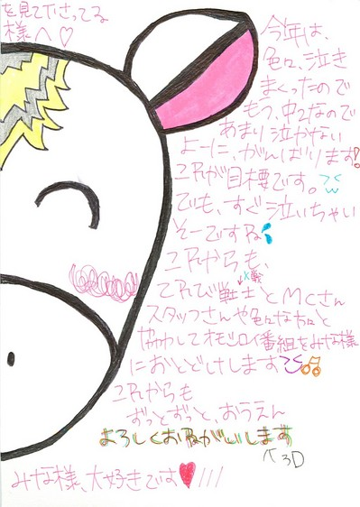
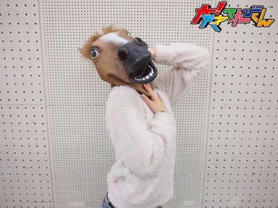
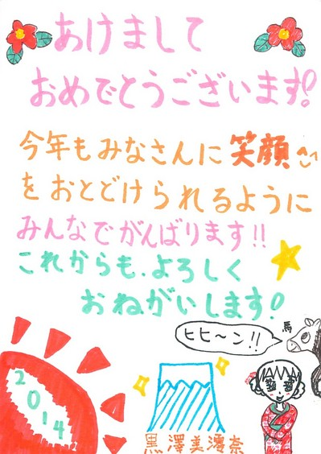

<<2013年12月 | トップページ | 2014年2月>>
2014年1月
【今年のお正月】ソーズビー航洋
★今年のお正月 ★
今年のお正月は、正月太りしてしまいました(´Д` )
こーーーーんなカップケーキを食べたから。
これを1日3個もΣ（ﾟдﾟlll）
これのほかにも、ソーダにお菓子にゼリーに、
何から何までジャンクなものをパクパクパクパク食べてました、笑
知り合いの方にも、太った？と言われました。
お正月太り、夏太り、幸せ太り、ストレス太り・・・食べ物って怖い！
お正月話Part2♪
僕、伊達眼鏡やサングラスなど、眼鏡類にものすごくハマっていて、
9個もあるんです！
この中でも、新しいサングラスを2つも買いました♪
若干つり目のサングラスと
若干たれ目のサングラス 笑
全体的に黒い眼鏡が多かったんですけど、たまにはフレームが明るくてもいいなーと思ったので、赤いのも買ってもらいました♪
伊達眼鏡やサングラスはいろんなお洋服に合わせると可愛いし、
つけるだけで真面目に見えるだけでなく、
格好良く見えたり、可愛いく見えたり、オシャレに見えたり、激しく見えたり、シンプルに見えたり、まとまって見えたり…
本当に便利だしオシャレなんです！
だからめっちゃ好き！
これからも集めるつもりです。笑
★大好きなお寿司のネタ ★
僕の好きなお寿司のネタは、ただ一つ…
「あぶサー！！！」
こと、炙りサーモンです♪
最高ですね。まじで。たまんない。
サーモン独自の旨味が、炙られることによって更に美味くなって、
炭の香ばしさが、口の中に広がると…ω
普通のサーモンとはちょっと違うし、炙るお魚ネタも少ないですからね！
お寿司屋さんに行ったら、3回は必ず食べます！(￣▽￣)
あーーー！でも、サビ抜きです！サビ抜き！
僕もお母さんもお父さんもワサビが苦手なので、我が家は必ずサビ抜きです！
なので、もちろん「あぶサー」も、サビ抜き！
みなさん！
絶対「サビ抜きあぶサー」食べてくださいね♪
Zvー！
投稿者:ソーズビー航洋 | 投稿時間:18時00分 | カテゴリ：We are 大天才テレビジョン | 固定リンク


 " title="ソーシャルブックマークについて">
" title="ソーシャルブックマークについて">
※NHKサイトを離れます。
【今年のお正月】山田陶子
★今年のお正月 ★
今年のお正月は、
年末から、絶対にグータラするんだ！って決めてました。
だから、
とにかく、特番観まくって、
おしり叩く番組と、紅白を両方観ながら年越しして、
あとは、ひたすら、
寝る寝る寝る寝る寝る寝る寝る寝る寝る・・・・・・ZZZ
毛布二枚にからまっていたらしい・・・・・・(-_-;)
出かけなかったわけではありませんよ(^。^)y-.。o○
ホテルのレストランとか行っちゃって、
バイキングを、
食べる食べる食べる食べる食べる食べる食べる食べる食べる・・・・・・。
パパの実家で、食べる食べる食べる食べる・・・・・・。
ママの実家で、食べる食べる食べる食べる・・・・・・。
後は、記憶があまりないですな(・o・)????
★大好きなお寿司のネタ ★
断然、『えび』です。
もともと、生ものが食べれなかったので、
家族でお寿司行くと、これしか食べれなかったんですよ。
でも、そのあと、まぐろが食べれるようになって、
去年『ご飯がすすむ』で、明太子が食べれるようになって(-。-)y-゜゜゜
今では、イクラとかも食べれるようになりました。
それでも、
不動の一位が『えび』です。
わさびは・・・いつ克服できますかね〜(；一_一)
大人になるころには、かっこよくわさび入りのお寿司を、カウンターで食べたいですね！
投稿者:山田陶子 | 投稿時間:18時00分 | カテゴリ：We are 大天才テレビジョン | 固定リンク
" title="ソーシャルブックマークについて">
※NHKサイトを離れます。
【今年のお正月】島田太一
★今年のお正月 ★
温泉旅行に行きました（＾ｖ＾）ゝ
当たり前ですが、温泉に入りました。
そして、人生で初めて岩盤浴に入りましたー！
最初に、岩盤浴の部屋のドアを開けた時は暑い、ムワッとした空気をあびてビビりました。
一回やめようかなと思いましたが、興味で入ることにしました。
はいったら5秒くらいで汗だくになりました。
今回は、5分しか入れなかったけど、もう一度、はいりたいです。
そして、その汗をいっぱいかいたあとに、お風呂で流して、
そのあとにお風呂で流して、そのあとに卓球をしました。
また、汗をかいてしまいました。
ごはんは、懐石料理みたいなのを食べました。
とても特別な、和食料理を食べました。
朝食はバイキングでした。
なので、典型的な正月太りしました。
まあ、正月っぽいことは、そんなにしてませんが、すごーく楽しかったです。

★大好きなお寿司のネタ ★
お寿司は、サーモンとネギトロが好きです。
特に、サーモンは焼きが好きです。
ネギトロは、握りより丼が好きです。
食堂でネギトロ丼を、よく多く頼みます。
ワサビは、けっこう前の年から食べれます。ガリも。
でも、サーモンとネギトロ以外のネタも、スゴい好きなんですけどねー。
甘い味と温かいシャリに、ピリっと辛いわさびが効いてて最高ですよねー☆
はい、この文章を書いていて、お腹へって、
お寿司が食べたくなった太一でしたーーヽ（◎ω◎♯）
投稿者:島田太一 | 投稿時間:18時00分 | カテゴリ：We are 大天才テレビジョン | 固定リンク
" title="ソーシャルブックマークについて">
※NHKサイトを離れます。
【今年のお正月】岡田結実
★今年のお正月 ★
あけましておめでとうございます！
今年もよろしくお願いします！！
今年は、家族旅行でハワイに行きました♪
向こうでプールに入り、少しだけ焼けました、、、汗。
でも、めっちゃ楽しかったです。
あと、ハワイから帰ってきた次の日の朝早くに、
神社に行って、おみくじをひいたら、毎年同じ「小吉」でした（笑）
今年も、最高の1年になったらいーなー
★大好きなお寿司のネタ ★
中トロが1番好きです。
絶対にお寿司屋さんで、中トロ食べます♪
わさびもつけて食べます！
わさびは最高っ☆
ちなみに茶碗蒸しも好きです。
投稿者:岡田結実 | 投稿時間:18時00分 | カテゴリ：We are 大天才テレビジョン | 固定リンク
" title="ソーシャルブックマークについて">
※NHKサイトを離れます。
【押忍！シャイ番長友情の旅】第２１回金子の日記
「押忍！シャイ番長友情の旅」21回目の放送、ご覧いただけましたか？
「カネヤンとなるいち」の友情ソング、「シャイニング」いかがでしたか？？
成瀬さんのやっている「ムード歌謡」という音楽ジャンルがベースになった、
2人ならではの、なんともいえない曲に仕上がりました。
曲作り・練習に計3日間かかりました。
成瀬さん、お忙しい中、本当にどうもありがとうございました！
シャイ番長と、成瀬さんのソロパートは、「相手に対して一番強く思った印象」を歌
詞にしました。
シャイ番長が歌った部分は、成瀬さんに対して思うことをシャイ番長が自分で歌詞に
したんですよ〜。
山あり谷ありの展開を、シャイ番長の日記でもお楽しみください。
左クリックをすると、原寸大になります。
投稿者:大天才テレビジョン社員１号 | 投稿時間:18時54分 | カテゴリ：お知らせ！ | 固定リンク
" title="ソーシャルブックマークについて">
※NHKサイトを離れます。
【今年のお正月】金子隼也
★今年のお正月 ★
こんにちは！
隼也です^_^
お正月の三が日は、テレビを見ながらのんびりのんびり、のんびーり過ごしました(笑)
高校サッカーや、天皇杯などサッカーの試合を見ていました。
高校サッカーの決勝は、先日行われました。劇的な試合でした。
それに忘れてはいけない、お正月といえば駅伝です。
お正月はスポーツをテレビで観戦！
熱く応援しすぎて、ちょっと叫びすぎたかな（笑）
筋書きのないスポーツ。やっぱりいいなぁ。
今回のお正月は、冬イベの稽古の合間だったので風邪をひかないように気をつけました。
お正月らしくないけどマスクで移動中の写真と、
初詣に行った神社に今年の干支「馬」がいました。
縁起がよさそうでしょ!?
皆さん、
寒い日が続くので風邪をひかないように気をつけてくださいね！
★大好きなお寿司のネタ ★
好きなお寿司のネタは「まぐろ」です！！
小さい頃から、ずーっと大好きでお寿司屋さんに行ったら絶対食べます。
白身の魚や他のネタも頼みますが、マグロの占める割合は８０％くらいです。
もちろん！
ワサビはありです（笑）
お寿司食べたくなってきたぁ〜。
投稿者:金子隼也 | 投稿時間:18時00分 | カテゴリ：We are 大天才テレビジョン | 固定リンク
" title="ソーシャルブックマークについて">
※NHKサイトを離れます。
【今年のお正月】長谷川ニイナ
★今年のお正月 ★
私の2014年、お正月は・・・。
ゴロゴロゴロ・・・。
と、まったりＤＡＹでした！
今年は、おじいちゃん・おばあちゃんの家にも行かなかったので、
テレビを見て笑ってました！！
あと、羽根突きのかわりに「バトミントン」してましたよ〜(笑)
多分ウチだけです・・・（汗）
2日には、映画も見ました！！！
2014年初映画！も感動する映画で良かったなぁ！
。。。。。
と、さっきから、お正月らしいことを何も言っていない気がするのですが（−_−）
そんな長谷川家ですけど、おみくじは引きましたよ！！！
結果は・・・。。。「中吉」でした。
う〜ん。
何ともコメントしづらい感じです（汗）
でも、お父さんは、大吉だったんですよ！！！
今年も良い年になりますように☆☆
★大好きなお寿司のネタ ★
たまたまですが、なぜか最近お寿司を食べる機会が多いんです！
この間、家族でも食べに行きました〜！！
やっぱり外せないのは、「サーモン」ですかね・・・！
サーモンは、色々な種類があって、あのとろっとした感じと、脂ののってる所が、ちょうどよくたまらないです！！！
ちなみに、ワサビは食べれないわけではないのですが、苦手です・・・（汗）
皆さんは、何が一番好きですか？？？
投稿者:長谷川ニイナ | 投稿時間:18時00分 | カテゴリ：We are 大天才テレビジョン | 固定リンク
" title="ソーシャルブックマークについて">
※NHKサイトを離れます。
【大！木曜ＬＩＶＥ】スーパーご当地キャラ大戦
今日の大！木曜ＬＩＶＥは、「スーパーご当地キャラ大戦」
ふなっしー軍団ｖｓでがっしー軍団で３番勝負を行いました！
ふなっしー軍団は、
去年大ブレイクした梨の妖精“ふなっしー”を筆頭に、
４５歳の中年しゃべくりキャラ“ちっちゃいおっさん”（兵庫県尼崎市）
顔で「岡」、身体で「崎」を表現した“オカザえもん”（愛知県岡崎市）
身長３ｍ５５ｃｍ、自称・ゆるキャラ界最大“お城ロボ”（岐阜県）
世界で人気、ＮＨＫの顔“どーもくん”
以上、５名が参戦！
一方、でがっしー軍団は、
ふなっしーに対抗意識を燃やしている４９歳、“でがっしー”（出川特命Ｐ）
人気者に対抗心を燃やし、本気モードでどーもくんに勝利した“チャン錦ちゃん”
ふなっしーが発表したあるある川柳のおかげで、見事新ワザを決めた“あるあるレッド”
普段のおばさんキャラと変わらない“ちっちゃいおばはん”（美晴）
卓球で鍛えた体で、オカザえもんを相撲で倒した“シマダえもん”（島田）
イス取りゲームで、ふなっしーに押しつぶされた“延命ロボ”（延命）
あるあるレッドの身体能力を身につけたい“のだのだグリーン”（野田）
シャイ番長で鍛えた精神力で、見事ＰＫを決めた“かねかねブルー”（金子）
以上、８名で対戦！
結果は、１６対０で、見事でがっしー軍団が圧勝！
放送後、お互いの健闘をたたえあい、記念写真（パチリ）
データ投票にご参加してくださったみなさん、ありがとうございました！
投稿者:大天才テレビジョン社員３号 | 投稿時間:19時57分 | カテゴリ：大！木曜LIVE | 固定リンク
" title="ソーシャルブックマークについて">
※NHKサイトを離れます。
【今年のお正月】野田真哉
★今年のお正月 ★
お正月は、毎年恒例の旅行に行きます！
渋滞するので近場ですが…。
その前に、初詣に行きおみくじを引きます！
必ず、大吉が出るまで引き続けますw
今年は3回目でやっと大吉が出ました！！
去年は1回目で出たのになー…
来年こそは1回目で大吉引いてやる！
本当に今年は大吉な年になればいいなぁー。。
みなさんはおみくじ引きましたか？？

★大好きなお寿司のネタ ★
う〜ん…
いっぱいある!!
サーモン、いくら、カワハギ、のどぐろなどなど、いっぱいあります！！
けど1位は、やっぱ「焼きあなご」ですかね〜
あの、熱いうちに食べた時の身のほくほく感がたまりません！！
あ。
やべ・・・
お寿司食べたくなってきたww
みんなは何が好き？？
投稿者:野田真哉 | 投稿時間:18時00分 | カテゴリ：We are 大天才テレビジョン | 固定リンク
" title="ソーシャルブックマークについて">
※NHKサイトを離れます。
【今年のお正月】中尾美晴
★今年のお正月 ★
2014年1月1日の、00:00:00になったら、家族全員で神社に初詣に行きました。
おみくじを引いたら「小吉」でした。
願いごとは「気がついたら叶ってた」みたいなことが、書かれていました。
気がついたら、夢が叶ってたなんておいしい事が、ほんまに今年起こるのかしら☆☆
冬のイベントの練習でお正月前後は忙しかったから、ゆっくり過ごせなかったかもしれないけど美晴は受験生！！
3日間ひたすら勉強してました。
だから、今年のお正月は「勉強正月」でした。
★大好きなお寿司のネタ ★
大好きなお寿司のネタは「ねぎとろ」です。
ねぎと、まぐろの絶妙なバランス！！最高です。
そして美晴は、しょうゆではなく「甘だれ」をかけます。
わさびは食べれないので、さびぬきです。
投稿者:中尾美晴 | 投稿時間:18時00分 | カテゴリ：We are 大天才テレビジョン | 固定リンク
" title="ソーシャルブックマークについて">
※NHKサイトを離れます。
【今年のお正月】延命杏咲実
★今年のお正月 ★
初ゆめで、TOTに助けられた延命です。
今年も私の家で、お正月に親せき13人で集まって、
じい様が買ってきてくれた、おいしいおすしや、おせち料理を食べました！
これは、毎年こうれいなんですよ！
いとこたちとゲームをして、遊んだりもしました。
私は、ボウリングのゲームが得意です☆
野球ゲームは・・・苦手です（笑）
あと、書き初めもしました！
今年は「世界の子」と書きました。
あっ！
よくできた方は、学校にだしたので、少し失敗してしまった方をのせました・・・。

★大好きなお寿司のネタ ★
私は、いろんなネタが好きですが、一番だったら「えんがわ」です！
かめばかむほど味がでてきて・・・とにかくおいしいです！
でも、あまりにぎりずしセットに入ってないのが残念です。
だから回転ずし屋さんに行ったときは、必ずたのみますよ☆
最近、わさびが入っていても食べれるようになりました。
投稿者:延命杏咲実 | 投稿時間:18時00分 | カテゴリ：We are 大天才テレビジョン | 固定リンク
" title="ソーシャルブックマークについて">
※NHKサイトを離れます。
【押忍！シャイ番長友情の旅】第20回金子の日記
「押忍！シャイ番長友情の旅」20回目の放送、ご覧いただけましたか？
弾き語りミュージシャン成瀬晃一さんと友達になったシャイ番長。
友達探しをしているあいだも、何とかして自分が歌うことは避けよう
（カスタネットとかで参加してやりすごそう）と思っていたらしく、
カラオケに行くまで、成瀬さんは説得に1時間あまりかかったんです！
歌うのが、本当に本当に嫌だったんですね…。
いざ、カラオケに行って、成瀬さんがシャイ番長の好きなKAT-TUNを歌っても、
励ましたり優しく説得しても、まったく歌おうとしないシャイ番長に、スタッフは
この企画はもはやこれまでか、とあきらめました…。
が！
成瀬さんが、昔シャイだったという驚愕の事実が発覚！
そうこうして、シャイ番長が、1曲無事に歌うことができたときには、それだけでス
タッフは感動してしまいました…。
成瀬さん、ありがとうございます！
カラオケで急速に仲良くなっていった2人。
次回、2人ならではの、衝撃的な（？）友情ソングを作ります。
どうぞお楽しみに〜！
山あり谷ありの展開を、シャイ番長の日記でもお楽しみください。
左クリックをすると、原寸大になります。

投稿者:大天才テレビジョン社員１号 | 投稿時間:18時54分 | カテゴリ：お知らせ！ | 固定リンク
" title="ソーシャルブックマークについて">
※NHKサイトを離れます。
【今年の正月】相澤侑我
★今年のお正月 ★
末吉だった侑我で〜す。
・・・・・・お正月どう過ごしたか
年末は、恒例のNHK紅白歌合戦でシメですね！
僕の尊敬する郷ひろみさんや、ゴールデンボンバーさん、
あまちゃんのメンバー総出演もあったし、
審査員には大河ドラマの岡田准一さんもいらっしゃいましたね☆
そして年明けは・・・・・・
学校の宿題ですが、書き初めをしました！
お題は、「豊かな心」。
あんまり練習する時間もなくて、1時間くらいで終わりにしましたが、どうでしょう(^^;;
おせち料理食べて初詣に行って、そうそう、おみくじ引いたら末吉で・・・
ま、今年もいろいろありますが、よろしくお願いします！
★大好きなお寿司のネタ ★
大好きなお寿司のネタですね！
僕は基本的には、サビ抜きです(^_^;)
赤身が大好きですね！
イクラや玉子もかなり好きですが・・・！
エビ、カニも好きだし、甘タレのアナゴなんかもう最高！
とにかくもう、お寿司は大好きです(o^^o)
投稿者:相澤侑我 | 投稿時間:18時00分 | カテゴリ：We are 大天才テレビジョン | 固定リンク
" title="ソーシャルブックマークについて">
※NHKサイトを離れます。
【冬のステージイベント】デジャビュ2
こちら延命杏咲実さん。
のどをケアするために、人一倍マスクのかけかたも厳重です。
さて、延命さんと言えば、稽古中のクライですよね。
2012年夏、、
こちらの記事にもあるように発声練習にてこずり…
その結果…
こうなりました。
そして時は2013年冬、、、
今年の稽古でも当然、発声練習は行いました。そんな記事もありましたね。
これは出川特命Ｐが参加した最後の稽古。監督の「ロングトーンで自己最高を出せ」という目標に応えられないてれび戦士たちは容赦ない鉄ついが下ります。
そしてこのお方の順番。陶子さんもニイナも祈るような気持ちで見つめます。
しかし…
延命ちゃんはプレッシャーに弱かった

最後のチャレンジと言うこともあって、いつもの平均までも記録は伸びず、終了。
涙が止まりません
みんなでなぐさめますが

なんかおもしろくなってきました。
延命ちゃんの活躍も見れるかもしれない！？
大！天才てれびくん スペシャル 「パズルの迷宮とゼロの秘宝」
2014年2月11日（火）夕方6:00〜 Eテレにて放送決定！！
お見逃しなく！！
投稿者:大天才テレビジョン社員２号 | 投稿時間:19時30分 | カテゴリ：お知らせ！ | 固定リンク
" title="ソーシャルブックマークについて">
※NHKサイトを離れます。
【冬のステージイベント】デジャビュ
こちら、1公演めが終了した後の楽屋。
竹原…見事な肉体美を披露…
確かお隣の方とは１歳しか違わないんですよね。。
しかしこの様子、どこかで見たことがあるような…
2013年の夏のイベント
＿人人人人人人人人人人＿
＞脱ぎたがりなのか！？＜
￣^Y^Y^Y^Y^Y^Y^Y^Y^Y￣
そういう行動にはおしおきである！
イベント担当スタッフによると稽古期間中、彼は必ず着替える際に稽古場の真ん中に出てきて
やおら脱ぎ出すのだそうです。しかももとの服を着るまでに必要以上に裸のままでいるとか。
うーん、どういう意図があるのか…
今日はここまで！！
大！天才てれびくん スペシャル 「パズルの迷宮とゼロの秘宝」
2014年2月11日（火）夕方6:00〜 Eテレにて放送決定！！
お見逃しなく！！
投稿者:大天才テレビジョン社員１号 | 投稿時間:18時00分 | カテゴリ：お知らせ！ | 固定リンク
" title="ソーシャルブックマークについて">
※NHKサイトを離れます。
【冬のステージイベント】無事終了しました
先週、1月11日、東京都多摩市のパルテノン多摩大ホールにて、
大！天才てれびくん スペシャル 「パズルの迷宮とゼロの秘宝」の公開収録が行われました。今日からはその舞台裏を少しだけですがご紹介しましょう。
あからさまに手作りの表示がてれび戦士たちを舞台にいざなう…
本番の前にして、初めてステージを見たてれび戦士たちのリアクション。
延命ちゃんは何かを決意するかのように口を真一文字に結んでいますね。
…シャッターを切るタイミングが悪かっただけという噂も。
そんな延命さん楽屋の前でポーズ。
「写真を撮られるときは、目を見開くようにしている」とのことです。ふぅん。
岡田結実さんホールの中なのに帽子を被っています。
おしゃれに気を遣う年頃ってやつですね。
今日はここまで！！
大！天才てれびくん スペシャル 「パズルの迷宮とゼロの秘宝」
2014年2月11日（火）夕方6:00〜 Eテレにて放送決定！！
お見逃しなく！！
投稿者:大天才テレビジョン社員１号 | 投稿時間:21時00分 | カテゴリ：お知らせ！ | 固定リンク
" title="ソーシャルブックマークについて">
※NHKサイトを離れます。
【あけましておめでとうございます】長谷川ニイナ
投稿者:長谷川ニイナ | 投稿時間:18時00分 | カテゴリ：We are 大天才テレビジョン | 固定リンク
" title="ソーシャルブックマークについて">
※NHKサイトを離れます。
【押忍！シャイ番長友情の旅】第１９回金子の日記
「押忍！シャイ番長友情の旅」１９回目の放送、ご覧いただけましたか？
今回の友達ミッションは、「ミュージシャンと友達になって友情ソングを作って歌
う」こと。
ここのところ、「野球」「絵」とシャイ番長の苦手なものが続いていましたが、
今回は苦手シリーズの極めつけ！
歌が苦手で、自分の歌声を人に聴かれたくない！と、ふだんはカラオケにも
ほとんど行ったことがなかったそう。
ミッションを告げたときのテンションの下がりっぷり、ハンパなかったです…。
一緒に歌を歌う友達は、せめてテンションの高いノリノリの人がいい！と
自分を奮い立たせて友達探しを始めるも、空振りの連続…。
次回、いったいどんな友達が見つかるのでしょうか？？お楽しみに！
山あり谷ありの展開を、シャイ番長の日記でもお楽しみください。
左クリックをすると、原寸大になります。
投稿者:大天才テレビジョン社員３号 | 投稿時間:18時55分 | カテゴリ：We are 大天才テレビジョン | 固定リンク
" title="ソーシャルブックマークについて">
※NHKサイトを離れます。
【あけましておめでとうございます】金子隼也
投稿者:金子隼也 | 投稿時間:18時00分 | カテゴリ：We are 大天才テレビジョン | 固定リンク
" title="ソーシャルブックマークについて">
※NHKサイトを離れます。
【あけましておめでとうございます】中里萌
投稿者:中里萌 | 投稿時間:18時00分 | カテゴリ：We are 大天才テレビジョン | 固定リンク
" title="ソーシャルブックマークについて">
※NHKサイトを離れます。
【あけましておめでとうございます】岡田結実


投稿者:岡田結実 | 投稿時間:18時00分 | カテゴリ：We are 大天才テレビジョン | 固定リンク
" title="ソーシャルブックマークについて">
※NHKサイトを離れます。
【あけましておめでとうございます】野田真哉
投稿者:野田真哉 | 投稿時間:18時00分 | カテゴリ：We are 大天才テレビジョン | 固定リンク
" title="ソーシャルブックマークについて">
※NHKサイトを離れます。
【チャンカワイの大！相撲中継】群馬県前橋場所
1月9日新年1回目の「チャンカワイの大！相撲中継」は群馬県前橋市から。
前橋市はこの日、年に１回の「初市」というお祭りの真っ最中でした！
午前中には、だるまの「お焚き上げ」も行われていました。
火の勢いにびっくり！

そんな中、地元のキャラクターたち、ころとん・たか丸くん・もじゃろーが集結！
全員が真剣に優勝を目指し、現場はピリピリとしたムードが漂いました。
結果は…チャン錦ちゃんの優勝！
チャン錦ちゃん、最近、向かうところ敵なしです！

寒い中、勝負を見守りにきていただいた皆さんも
本当にありがとうございました！
投稿者:大天才テレビジョン社員３号 | 投稿時間:21時00分 | カテゴリ：大！木曜LIVE | 固定リンク
" title="ソーシャルブックマークについて">
※NHKサイトを離れます。
【冬のステージイベントに向けて】最後の稽古編
いよいよNHKでの稽古最後の日。
「お前たち気合入れろー−！！」
出川さんのピコピコハンマーがうなる。
うりゃーーー！！
どりゃーー！！
ううおおおおおお！！！本番がんばるずおおおお！！！おーーー！！
本当に大丈夫かな。。。心配になってきた。。。

本番まであと2日。
投稿者:大天才テレビジョン社員３号 | 投稿時間:20時44分 | カテゴリ：We are 大天才テレビジョン | 固定リンク
" title="ソーシャルブックマークについて">
※NHKサイトを離れます。
最強アバターを決める「アバタイセン」〜第9戦〜
地上最強のアバターを決める超大型企画「アバタイセン」。今回は第8戦。
大天才テレビジョン内部にあるコンピューターが自動対戦した結果、
全世界に存在する 全26090体 のアバターの頂点に立ったのは…
東京都 とらんしーばさん

おめでとう！
ベスト８の対戦結果はこちらです（左クリックで拡大します）。

アバターの強さは、『パーツ』や『色』の組み合わせで変わります！
番組HPにあるトレーニングセンターで自分のアバターと、てれび戦士や出川特命Pの
アバターと対決させて、最強アバターになる組み合わせを見つけてほしい！
君も最強のアバターを作って対戦の時を待て！
アバターの制作はこちらから！
投稿者:大天才テレビジョン社員３号 | 投稿時間:19時00分 | カテゴリ：大！木曜LIVE | 固定リンク
" title="ソーシャルブックマークについて">
※NHKサイトを離れます。
【あけましておめでとうございます】ソーズビー航洋

投稿者:ソーズビー航洋 | 投稿時間:18時00分 | カテゴリ：We are 大天才テレビジョン | 固定リンク
" title="ソーシャルブックマークについて">
※NHKサイトを離れます。
【あけましておめでとうございます】島田太一
投稿者:島田太一 | 投稿時間:18時00分 | カテゴリ：We are 大天才テレビジョン | 固定リンク
" title="ソーシャルブックマークについて">
※NHKサイトを離れます。
【冬のステージイベントに向けて】がんばれロングトーン編
今年もやってます。ロングトーン。
腹式呼吸で「あーーーー」とできるだけ長く声を出し続ける、ボイストレーニングのひとつ。
毎回、稽古のはじめに準備運動とともにウォーミングアップとして行っています。
去年は20秒続けることを目標にがんばっていました。そのおかげで今年はみんな早い段階でクリア。
こちらは最長記録保持者の美晴。
記録は３８秒。すごい−。
ひとりずつみんなの前で挑戦していきます。
続いて黒澤。いままでの黒澤の平均記録は約２４秒。
目指せ３０秒。よーいスタート！
（ピッ）←ストップウォッチ
「あーーーーーーーーーー（まだ余裕）ーーーーーーー（まだいけるよね）ーーー
ーーー（お？なかなか…）ーーーー〜〜〜〜（苦しくなってきたか）〜〜〜〜（あら？これはもしかして）〜〜〜〜ぶはぁっ！！！」
記録は・・・・・
３３秒！
見事３０秒越え達成！！
おめでとう！
本番まであと３日。
投稿者:大天才テレビジョン社員３号 | 投稿時間:11時00分 | カテゴリ：We are 大天才テレビジョン | 固定リンク
" title="ソーシャルブックマークについて">
※NHKサイトを離れます。
【あけましておめでとうございます】山田陶子
投稿者:山田陶子 | 投稿時間:18時00分 | カテゴリ：We are 大天才テレビジョン | 固定リンク
" title="ソーシャルブックマークについて">
※NHKサイトを離れます。
【冬のステージイベントに向けて】飛んで飛んで新年編
あけましておめでとうございます。
1月11日、「大！天才てれびくん」公開収録。いよいよ本番まで1週間をきりました。
正月ボケしている場合ではない！
アクセル全開！
ＧＯ！てれび戦士！
おおお飛んだ！！！！！（いいぞ延命ちゃん！）
落ちた。。。。（ダメじゃん）
本番まであと４日。
投稿者:大天才テレビジョン社員３号 | 投稿時間:11時00分 | カテゴリ：We are 大天才テレビジョン | 固定リンク
" title="ソーシャルブックマークについて">
※NHKサイトを離れます。
【あけましておめでとうございます】中尾美晴
投稿者:中尾美晴 | 投稿時間:18時00分 | カテゴリ：We are 大天才テレビジョン | 固定リンク
" title="ソーシャルブックマークについて">
※NHKサイトを離れます。
【あけましておめでとうございます】黒澤美澪奈


投稿者:黒澤美澪奈 | 投稿時間:18時00分 | カテゴリ：We are 大天才テレビジョン | 固定リンク
" title="ソーシャルブックマークについて">
※NHKサイトを離れます。
【あけましておめでとうございます】竹原司
投稿者:竹原司 | 投稿時間:18時00分 | カテゴリ：We are 大天才テレビジョン | 固定リンク
" title="ソーシャルブックマークについて">
※NHKサイトを離れます。
【あけましておめでとうございます】相澤侑我
投稿者:相澤侑我 | 投稿時間:18時00分 | カテゴリ：We are 大天才テレビジョン | 固定リンク
" title="ソーシャルブックマークについて">
※NHKサイトを離れます。
【あけましておめでとうございます】延命杏咲実
投稿者:延命杏咲実 | 投稿時間:18時00分 | カテゴリ：We are 大天才テレビジョン | 固定リンク
" title="ソーシャルブックマークについて">
※NHKサイトを離れます。
【あけましておめでとうございます】大！天才てれびくん
あけましておめでとうございます。2014年の幕が開きました。
大天才テレビジョン一同は今年もみなさまにすてきな番組を届けるため、日々がんばって参ります。
今後とも変わらぬご愛顧を賜りますようお願い申し上げます。
投稿者:大天才テレビジョン社員１号 | 投稿時間:00時00分 | カテゴリ：We are 大天才テレビジョン | 固定リンク
" title="ソーシャルブックマークについて">
※NHKサイトを離れます。
ページの一番上へ▲


{kind=link}
{kind=link}
{kind=link}
{kind=link}
{kind=link}
{kind=link}
{kind=link}
{kind=link}
{kind=link}
{kind=link}
{kind=link}
{kind=link}
{kind=link}
{kind=link}
{kind=link}
{kind=link}
{kind=link}
{kind=link}
{kind=link}
{kind=link}
{kind=link}
{kind=link}
{kind=link}
{kind=link}
{kind=link}
{kind=link}
{kind=link}
{kind=link}
{kind=link}
{kind=link}
{kind=link}
{kind=link}
{kind=link}
{kind=link}
{kind=link}
{kind=link}
{kind=link}
{kind=link}
{kind=link}
{kind=link}
{kind=link}
{kind=link}
{kind=link}
{kind=link}
{kind=link}
{kind=link}
{kind=link}
{kind=link}
{kind=link}
{kind=link}
{kind=link}
{kind=link}
{kind=link}
{kind=link}
{kind=link}
{kind=link}
{kind=link}
{kind=link}
{kind=link}
{kind=link}
{kind=link}
{kind=link}